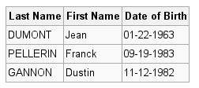
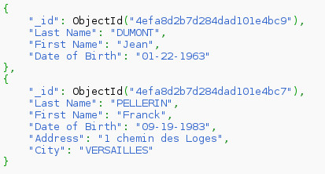

Saturs
NoSQL (not only SQL, no SQL) ir t.s. lietussarga termins, kas apzīmē datubāzu vadības sistēmas, kuru kopīgā īpašība ir pretstats klasiskajam relāciju datu modelim [1]. Šīs DBVS ir optimizētas priekš datu izgūšanas un pievienošanas, un ir noderīgas lieliem datu apjomiem. Neizmantojot relāciju datu modeli, ir atvieglota mērogošana, it īpaši horizontāla mērogošana, jeb jaunu datoru, serveru pievienošana sistēmai.
Šīm datubāzu vadības sistēmām parasti nav fiksētas shēmas, kādā tiek glabāti dati. Parasti dati tiek glabāti atslēgu-vērtību krājumā, grafu kopā, dokumentu krājumā vai objektu kopā. Manipulācijai ar datiem tiek izmantota nevis SQL valoda, bet DBVS specifisks interfeiss- binārs vai tekstuāls.
NoSQL datubāzu vadības sistēmām ir arī trūkumi, proti:
Izplatīts veids [1], [3] kā iedalīt, kategorizēt NoSQL DBVS ir pēc izmantotā datu glabāšanas modeļa. Izšķir sekojošus datu glabāšanas modeļus:
Dokumentu krātuves modelī galvenais elements ir "dokuments". Katrai NoSQL realizācijai ir nedaudz atšķirīga dokumenta definīcija, taču ir pieņemts, ka dokuments iekapsulē un satur datus. Dati var būt dažādos formātos- gan tekstuālos (XML, YAML, JSON), gan bināros (PDF, Microsoft Office formāti, BSON).
Katram dokumentam ir piekārtots unikāls identifikators, pēc kura nekļūdīgi var izgūt dokumentu. Parasti tiek sniegtas arī papildu iespējas dokumentu meklēšanai pēc metadatiem vai satura, tomēr katrā dokumentu krātuvē tas tiek realizēts savādāk.
Dokumentu organizācijai arī tiek izmantoti dažadi paņēmieni- organizācija pēc metadatiem, birkas, kolekcijas kā arī direktoriju hierarhijas.
Dokuments konceptuāli ir līdzīgs rindai relāciju datubāzu sistēmās, taču atšķirībā no relāciju datubāzes- dokumenti var būt ar dažādu struktūru, dažādiem laukiem. Kolekcijas, jeb dokumentu grupas līdzinās tabulām relāciju sistēmās, bet relāciju sistēmās vienā tabulā katras rindas struktūra ir identiska- dokumentu krātuvē dokumentu struktūra kolekcijā var atšķirties.
Relāciju datubāzes tabula.
Līdzīgas struktūras kolekcija MongoDB [4] datubāzē.
Šajā piemērā ir attēlota MongoDB kolekcija ar diviem dokumentiem. "_id" lauks ir automātiski ģenerēts ievietojot dokumentu. Tas ir unikāls, un to izveido MongoDB, automātiski. Pēc šī lauka dokumentu var unikāli identificēt un izgūt.
MongoDB dokumenti fiziski tiek glabāti BSON [5] formātā, kas būtībā ir binārs pieraksts JSON (JavaScript Object Notation) formātam, lai samazinātu glabājamo datu daudzumu un sistēmas ātrdarbību. Lietotājam dati tiek attēloti JSON formātā, kā redzams iepriekšējā piemērā.
Atslēga-vērtība krātuvēs tiek izmantots atslēga-vērtība koncepts. Katrs ieraksts ir atslēgas-vērtības kortežs. Lielākajā daļā realizāciju, atslēga var būt primitīvs datu tips (teksta virkne, skaitlis), savukārt vērtība- salikts datu tips, kas var sastāvēt no sarakstiem, asociatīviem masīviem, teksta virknēm, kā arī primitīviem datu tipiem.
Atslēgas-vērtības krātuvēs dati parasti izskatās šādi:
Atslēga Vērtība
students_1 {"vards": "Pēcis Beisikāns", "grupa": "DB3"}
students_2 {"vards": "Maija Saprātiņa", "grupa": "DB3"}
grupa_DB3 {"nosaukums": "DB3", "fakultate": "DITF"}
DITF_skaits 1028
DITF_adrese "Meža iela 1, Rīga"
Atslēgas-vērtības krātuves konceptuāli ir līdzīgas dokumentu krātuvēm- katra atslēga ir unikāls identifikators, bet pretstatā dokumentu krātuvēm, vērtības ieraksts, jeb saturs nav strikti formatēts kādā noteiktā formātā.
Parasti atslēgas-vērtības datu krātuves lietojumprogrammu interfeisi pēc atslēgas atgriež datus jau programmatūras valodai specifiskos datu tipos.
Šajā koda paraugā tiek izmantots Redis [6] programmēšanas valodā Python ar redis-py [7] bibliotēku piekļūšanai pie Redis datubāzes. Pirmās divas koda rindiņas ir atbildīgas par pieslēgšanos datubāzei, ar uzstādījumiem pēc noklusējuma (serveris: localhost, ports: 6379). r.sadd(<atslēga>, <kopa>) metode tiek izmantota, lai kopai ar nosaukumu <atslēga> pievienotu elementus 1,2,3. Pēc tam ar komandas r.smembers(<atslēga>) palīdzību tiek nolasīts kopas saturs.
Pēdējās divās rindiņās tiek demonstrēta primitīva datu tipa, teksta virknes saglabāšana Redis datubāzē.
Dažas atslēgu-vērtību krātuves piedāvā arī atomāras darbības ar atslēgas vērtību- pievienot ierakstu, ja tas neeksistē, palielināt atslēgas vērtību. Atomāra darbība, vai nu izpildās veiksmīgi, vai neatstāj ietekmi uz datiem. Tas ir īpaši svarīgi izplatītās sistēmās, kur atomāru darbību izmantošana ļauj izvairīties no race condition. Šo piemēru vislabāk var ilustrēt sekojošs koda paraugs:
import redis r = redis.Redis() value = r.get('atslega') value = value +1 r.set('atslega')
Ja šis kods tiek izpildīts divās plūsmās, vienlaicīgi, ir iespējams, ka abas plūsmas nolasa atslēgas vērtību vienā brīdī, tādējādi value abās plūsmās ir vienāda vērtība. Katra plūsma izpilda saskaitīšanas operāciju, un rezultāta ieraksta vienādu vērtību.
Lai no tā izvairītos, konkrēti Redis datubāze piedāva operāciju inc, kas ir atomāra atslēgas vērtības palielināšanas operācija:
import redis r = redis.Redis() r.inc('atslega')
Šis koda fragments izpildoties vienmēr palielinās vērtību par viens, arī ja izpildīsies vairākās plūsmās vienlaicīgi.
Galvenais pielietojums atslēgu-vērtību krātuvēm ir relatīvi īsu, taču daudzskaitlīgu datu glabāšanai, it īpaši izplatītās sistēmās (darbojas paralēli uz vairākiem datoriem). Datu kopa bieži vien tiek glabāta operatīvajā atmiņā, tāpēc datu izgūšana ir zibenīga, taču ar iespējamiem konsistences trūkumiem. Datus, kuru zaudējums nav pieļaujams noteikti nevajadzētu glabāt atslēgas-vērtības tabulā. Savukārt, dati, kuru zaudējums neatstāj lielu ietekmi uz sistēmas darbību, bet tiek bieži izmantoti var tikt glabāti atslēgas-vērtības krātuvēs.
Atslēgu-vērtību krātuves tiek izmantotas arī iegultajās sistēmās, jo tās ir viegli apstrādājamas lielākajā daļā programmēšanas valodu. HTML5 [8] standarts [9] paredz izmantot atslēgas-vērtības krātuvi datiem, ko tīmekļa vietne var saglabāt lietotāja iekārtā. Pašreizējās realizācijas tīmekļa pārlūkos diemžēl pieļauj tikai teksta-virknes vērtības- lai glabātu saliktas vērtības, lietojumprogrammas izstrādātājam pašam jārūpējas par datu serialēšanu un de-serializēšanu.
| [1] | (1, 2) http://en.wikipedia.org/wiki/NoSQL |
| [2] | http://en.wikipedia.org/wiki/Eventual_consistency |
| [3] | http://nosql-database.org/ |
| [4] | http://mongodb.org/ |
| [5] | http://docs.mongodb.org/manual/reference/glossary/#term-bson |
| [6] | http:://redis.io/ |
| [7] | https://github.com/andymccurdy/redis-py |
| [8] | http://www.html5rocks.com/en/features/storage |
| [9] | http://www.w3.org/TR/2011/CR-webstorage-20111208/ |